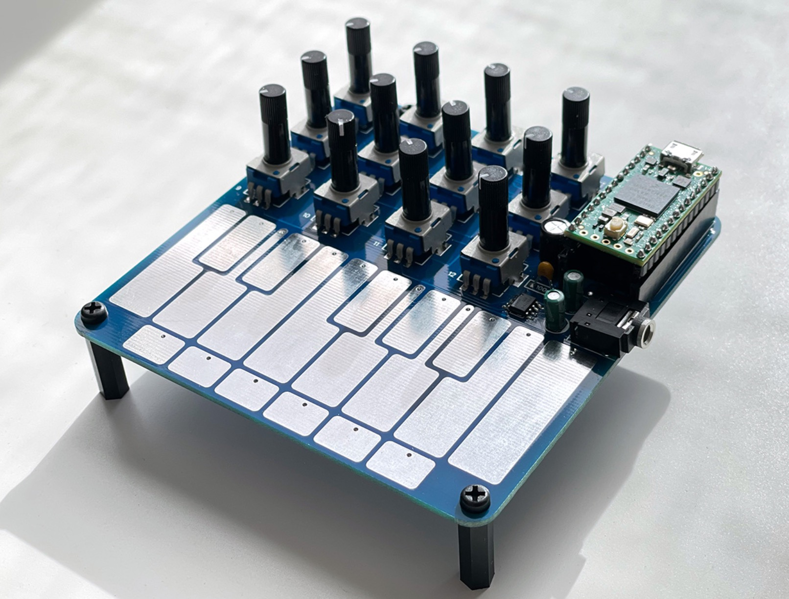

Teensy based usb midi keyboard + controls + stereo audio

Teensy 4 based USB MIDI device with number of FWs. - 12 MIDI mappable potentiometers - full octave touch keyboard - 6 touch function buttons - stereo audio output - runs on Teensy 4.0 / fully reprogrammable - conceived as a friend of norns but works with anything that supports MIDI over USB
All DB data
- Name: Flounder
- Author: Matt Kuebrich
- Link: https://github.com/MattKuebrich/flounder
- Demo: https://www.youtube.com/watch?v=Wfl-h9pgLO8
- Picture: ../pics/flounder.jpg
- Description: Teensy based usb midi keyboard + controls + stereo audio
- Notes: **Teensy 4 based USB MIDI device with number of FWs. - 12 MIDI mappable potentiometers - full octave touch keyboard - 6 touch function buttons - stereo audio output - runs on Teensy 4.0 / fully reprogrammable - conceived as a friend of norns but works with anything that supports MIDI over USB **
- Artifacts: {“Schematic”=>true}{“PCB”=>false}{“BOM”=>false}{“FW”=>true}{“Docs”=>false}{“Enclosure”=>false}
- Tags: TeensyMIDI
- Level: Newbe
{kind=link}